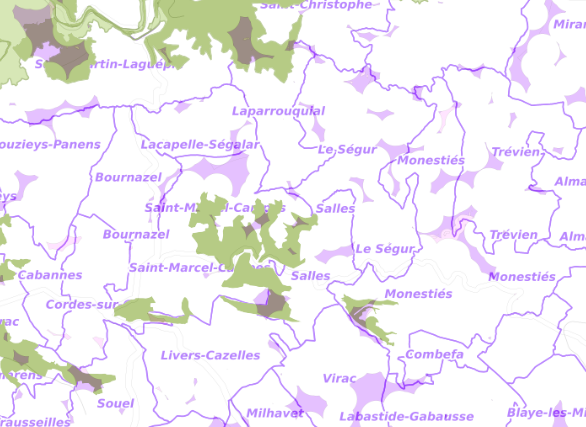
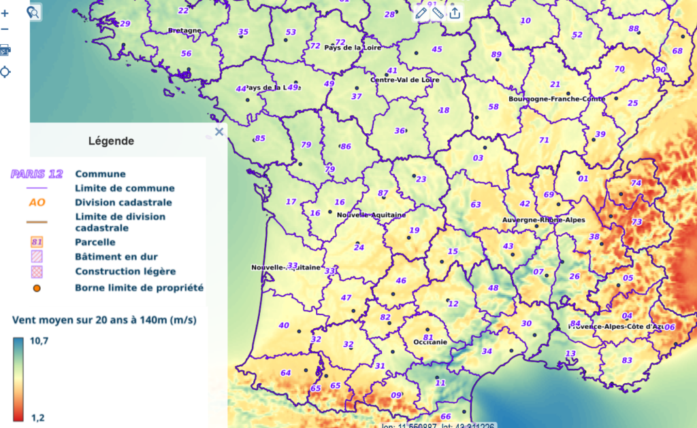
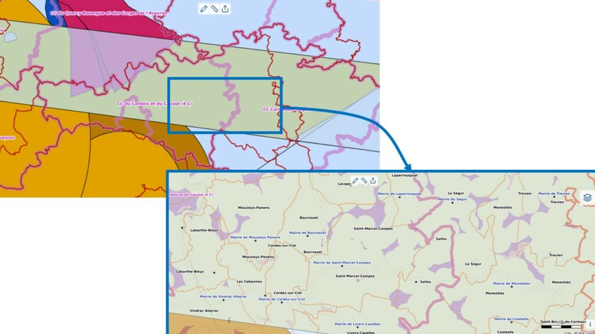

Voir aussi : Photovoltaïque industriel : une fausse bonne idée ?
Les éoliennes défigurent les paysages français. Les installations en France peuvent atteindre une hauteur de 220-250 mètres en bout de pale, à comparer aux 300 mètres de la Tour Eiffel.
Le bruit audible au pied d'une éolienne est celui d'un marché animé. À 500 mètres, le bruit est d'environ 35 décibels, c'est-à-dire celui d'une conversation à voix basse (ADEME, ENGIE).
Mais qui a envie d'entendre en permanence le bruit d'une conversation à voix basse ?
Appréhender la réalité du bruit est complexe. Le protocole de mesure du ministère est une illustration de cette complexité. Les éoliennes émettent entre 103 et 107 dB à 10 m de hauteur avec un vent de 9m/s.
Ce seuil de 35 décibels dispense de respecter le code de la santé publique (30 dB(A)).
La modulation d'amplitude crée des fluctuations sonores susceptibles de causer de la gêne.
Le 8 mars 2024, le Conseil d'État a relevé que les arrêtés ministériels n'ont pas respecté les principes de participation et transparence.
Comparaison des sources d'électricité (gCO2/kWh) :
Source : base Empreinte de l'ADEME (janvier 2024)
L'éolien est une source d'énergie intermittente. Le facteur de charge de l'éolien terrestre est de 21,6 % selon RTE 2022.
Le crédit de capacité (puissance disponible en heure de pointe) est de 10 % seulement pour l'éolien, contre 95 % pour le nucléaire.
Il est indispensable de compléter par des centrales à gaz pour la production de base. C'est aberrant d'un point de vue écologique.
Les éoliennes nuisent à la biodiversité. Selon la Ligue protectrice des oiseaux (LPO), entre 0,3 et 18,3 oiseaux sont tués par an et par éolienne. Les facteurs déterminants sont la proximité avec les zones protégées Natura 2000 et la sensibilité des migrateurs.
Une éolienne, c'est 1000-1500 tonnes de béton dans le sol. Quel impact sur l'écoulement des eaux ?
L'éolien est très consommateur de métaux rares ou critiques, en quantité limitée.
Les pales contiennent du balsa, un bois exotique provenant de forêts intertropicales, participant à la déforestation en Amazonie.
Le territoire présente un intérêt écologique avec des Zones Naturelles d'Intérêt Écologique, Faunistique et Floristique (ZNIEFF). Certaines zones potentielles d'éoliennes sont situées sur ces ZNIEFF.

L'éolien est une source d'électricité plutôt chère quand on regarde le coût de production :
Source : rapport complet de RTE « Futurs énergétiques 2050 », p.577
Une autre façon de voir le sujet est de regarder le coût vu d'EDF :
Ce surcoût ne serait pas un problème en soi si les éoliennes ne cumulaient pas par ailleurs de nombreux désavantages.
L'empressement dont font preuve les opérateurs privés pour installer des éoliennes sur le territoire sont un indice que tout cela profite majoritairement à des intérêts privés, et pas à l'intérêt général.
L'éolien est une source d'électricité peu efficace.
Une notion utile est le taux de retour énergétique (TRE), qui est le ratio entre l'énergie produite et l'énergie consommée au préalable pour produire cette énergie.
En anglais : energy returned on energy invested (EROI)
Comparaison :
Source : Un monde sans fin de Blain et Jancovici, p.161
La présence d'éoliennes fait baisser de manière sévère l'immobilier (jusqu'à -30% selon les professionnels), nuit au tourisme, au cyclotourisme, aux randonnées pédestres, à la location de gîtes et de chambres d'hôtes, et affaiblit par conséquent les compléments de revenus ou de retraite.
Il est illusoire de penser que les éoliennes vont créer des emplois durables locaux. Les fabricants d'éoliennes sont très majoritairement étrangers. L'exploitation et le suivi se font électroniquement à distance. La maintenance est effectuée par des équipes dédiées qui se déplacent si besoin, et ne vivent pas sur le territoire.
Les éoliennes produisent :
– des nuisances lumineuses : selon le moment de la journée et l'orientation du dispositif, elles peuvent masquer périodiquement le soleil pendant une fraction de seconde, ou générer des flashs lumineux en renvoyant les rayons du soleil ; cet effet stroboscopique est susceptible d'affecter les animaux et les humains ;
– des infrasons, c'est-à-dire des ondes sonores non audibles par les humains, mais néanmoins perçues par notre corps, et également par les animaux (cf. Wikipedia) ; et ceci en plus du bruit audible précédemment évoqué.
Comme l'indiquent les autorités de santé fédérales belges (source), « les infrasons et les bruits de basse fréquence peuvent provoquer de la gêne, même lorsqu'ils sont inaudibles. »
– des champs électriques et électromagnétiques ;
– des courants électriques « vagabonds » dans le sol.
Risque pour la santé ?
Des cas troublants ont été recensés (migraines et mal de ventre chez les humains, apathie et refus de s'alimenter chez les animaux…) (cf. Le prix du vent, éditions du Rocher). Les rares enquêtes par les services de l'État n'ont pas pu établir un lien de causalité formel.
Mais, pour analyser ces phénomènes, il faudrait faire de véritables études épidémiologiques, ce que l'Académie de médecine préconisait dans son avis de 2006, puis de 2017.
L'Académie de médecine demandait également en 2006 à ce que, par précaution, les éoliennes soient implantées à plus de 1,5 km des habitations. L'État a choisi une distance plus courte : 500 mètres.
Il semblerait logique que la distance minimale d'implantation soit désormais proportionnelle à la hauteur des éoliennes. C'est le choix fait par la Bavière et la Pologne, qui fixent cette distance minimale à dix fois la hauteur des engins (donc 2 km pour une hauteur de 200 m).
En 2021, la Cour d'appel de Toulouse reconnaît que des éoliennes installées près d'une habitation dans un village du Tarn sont nocives pour la santé. La Cour reconnaît ainsi la réalité d'un syndrome des éoliennes, entraînant une altération de l'état de santé. L'exploitant a été condamné à indemniser les riverains à hauteur de 128 000 euros. (articles : France Bleu, Le Figaro)
L'obligation de démanteler revient à l'exploitant privé qui loue la parcelle agricole pour implanter l'éolienne. Mais, en fin de vie de l'éolienne, qu'adviendra-t-il concrètement si l'exploitant privé a fait faillite (ou a « organisé » sa faillite), ou bien est installé au bout du monde (suite à des reventes en cascade du contrat) et ne répond tout simplement plus au téléphone ? Il reviendra dans ce cas à l'agriculteur, propriétaire du terrain, de démanteler et dépolluer, opérations dont le coût est exorbitant.
Envisager l'éolien est d'autant plus étonnant que la vitesse du vent est très moyenne dans notre vallée, et le Nord du Tarn en général, comme le prouve cette carte officielle de l'État :

A la fois un réseau très basse altitude militaire (bande transversale) sur Salles et Saint-Marcel-Campes et des radars visibles sur la carte ci-dessous issue du portail cartographique officiel de l'État. Ceci est de nature à limiter la puissance des éoliennes, et donc réduire leur efficacité et leur éventuel intérêt.

Certes les communes toucheront des revenus pour l'exploitation des éoliennes installées sur leur territoire (taxe sur la production énergétique). Mais ces revenus seront vite annulés par :